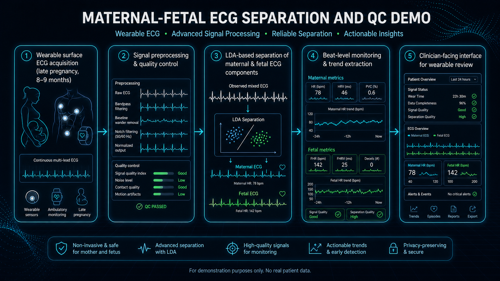

Portable monitoring workflow for late-pregnancy ECG acquisition, maternal/fetal separation, and clinician-facing wearable UI review.
This demo design targets portable surface ECG monitoring in late pregnancy. The pipeline separates maternal and fetal components and presents interpretable trends in a clinician-facing interface.
Core objectives are robust separation quality, practical wearable integration, and usable real-time visualization for medical review.

Acquire signals in late-pregnancy contexts using a portable sensor interface.
Apply preprocessing and artifact control to stabilize traces before separation.
Use linear discriminant analysis to separate and reconstruct maternal and fetal components.
Render outputs in a simple interface designed for wearable monitoring and review.